Тема лабораторной работы: «Создание таблиц истинности логических функций».
Цель: обучение способам создания таблиц истинности логических функций ручным способам и с помощью электронных таблиц Excel .
Оборудование: электронные таблицы Excel , интерактивная доска для демонстрации компьютера учителя.
Ход занятия:
Актуализация знаний
Изложение нового материала
Сегодня на занятии мы научимся создавать таблицы истинности логических функций, как ручным способом, так и с помощью электронных таблиц Excel .
Логической функцией можно назвать логическое выражение, построенное по законам алгебры логики. Основным отличием функции от логического выражения является необходимость использования всех возможных наборов входных данных в то время как для решения логического выражения нужны только определенные наборы, подходящие под условие логической задачи.
Таблицей истинности является таблица, в которой для различных наборов входных переменных логической функции определяется истинность результата функции. Причем, результат функции может быть истинным при одних наборах и ложным – при других. Результатом истинной функции может быть полученное значение 1 или логическое значение ИСТИНА. Результатом ложной функции является 0 или ЛОЖЬ.
Рассмотрим правила построения таблицы истинности, которые используются как для ручного, так и для электронного способов построения таблиц.
Правила построения таблицы истинности:
Сформулируем алгоритм построения таблицы истинности.
Алгоритм построения таблицы истинности:
Если в функции есть действия в скобках, то у таких действий имеется первый приоритет, а иначе приоритеты располагаются в следующем порядке (от самого приоритетного к менее приоритетному):
Первые три операции рассмотрены в практической работе по теме “Информационно-логические основы персонального компьютера”, поэтому рассмотрим две оставшиеся операции “Импликация” и “Эквиваленция”.
Импликация – это операция логического следования, которая ложна тогда и только тогда, когда из истинной предпосылки следует ложный результат. Импликацию в алгебре логики изображают с помощью →.
Построим таблицу истинности импликации.
Таблица истинности логической операции “Импликация”
|
А |
В |
А → В |
|
0 |
0 |
1 |
|
0 |
1 |
1 |
|
1 |
0 |
0 |
|
1 |
1 |
1 |
Эквиваленция – это операция логического равенства, которая истинна только в случае сравнения одинаковых элементов. Эквиваленцию в алгбре логики можно отображать разными способами, но самыми распространенными являются: ~, =, .
Построим таблицу истинности эквиваленции.
|
А |
В |
А В |
|
0 |
0 |
1 |
|
0 |
1 |
0 |
|
1 |
0 |
0 |
|
1 |
1 |
1 |
Рассмотрим примеры построения логических функций в электронных таблицах Excel.
Задача 1. Построить таблицу истинности для следующей логической функции: .
Решение
Запустим электронные таблицы Excel и подготовим таблицу. В данной таблице будет общий заголовок, «шапка» и установленные границы. Границы нужно установить исходя из того, что исходных переменных 3: А, В и С. Получается, что нужно выделить 8 строк для заполнения (т.к. 2 3=8). В результате получим:
<Тема лабораторной работы: «Создание таблиц истинности логических функций». width="623" src="https://myfiles.space/user_files/192107_07ac7065e28e5be0/192107_custom_files/img1705658785.png" alt="Изображение выглядит как текст, число, Шрифт, снимок экранаАвтоматически созданное описание" height="310" >
Заполним столбцы А, В и С входными данными, начиная со всех нулей и заканчивая всеми единицами. В результате получим:
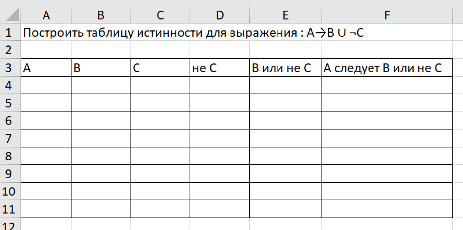
Вычислим столбец «не С». Для этого в ячейке D 4 напишем формулу: =НЕ(С4), нажмем Enter , и протянем формулу за правый нижний угол. В результате получим:
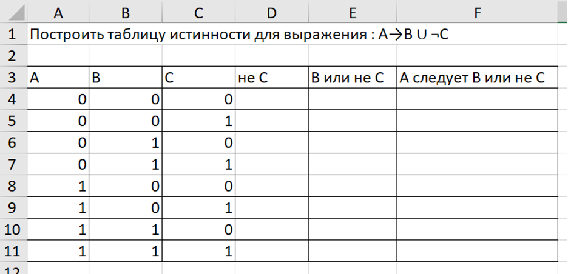
Получим результаты столбца «В или не С». Для этого в ячейку Е4 напишем формулу: =ИЛИ(B4;D4), нажмем Enter , и протянем формулу за правый нижний угол. В результате получим:
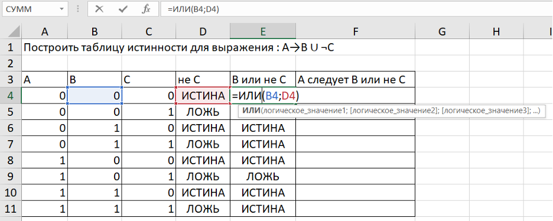
Получим результаты столбца «А следует В или не С». Для этого в ячейку Е4 напишем одну из формул: =ИЛИ(НЕ(A4);E4) или =ЕСЛИ(И(A4=1;E4=0);0;1), нажмем Enter , и протянем формулу за правый нижний угол. В результате получим:
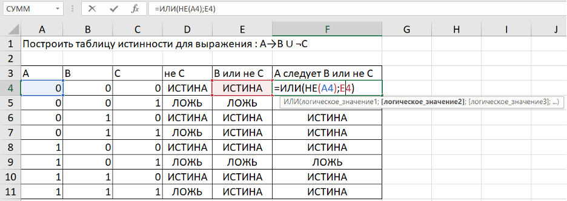
Оформим таблицу:
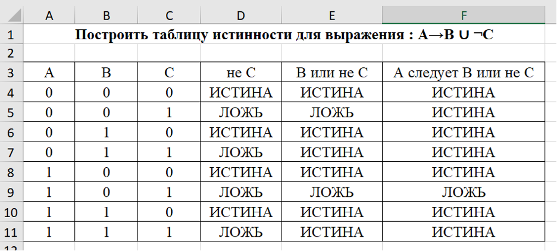
- установка шрифта и размера,
 - установка полужирного шрифта
- установка полужирного шрифта
Переименуем Лист1 в Задача 1
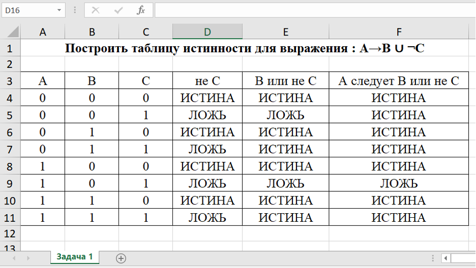
Нажмем на + и переименуем новый Лист1 в Задача 2
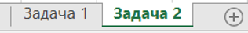
Выполним задачу 2.
Задача 2. Построить таблицу истинности для следующей логической функции: .
Решение
В данной таблице будет общий заголовок, «шапка» и установленные границы. Границы нужно установить исходя из того, что исходных переменных 3: А, В и С. Получается, что нужно выделить 8 строк для заполнения (т.к. 2 3=8). Заполним столбцы А, В и С входными данными, начиная со всех нулей и заканчивая всеми единицами. В результате получим:
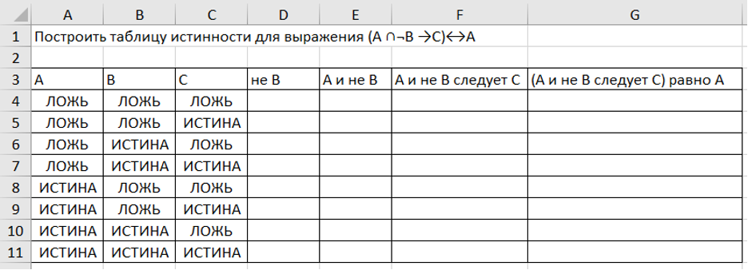
Вычислим данные столбца « не В » . Для этого в ячейке D 4 напишем формулу: =НЕ(В4), нажмем Enter , и протянем формулу за правый нижний угол. В результате получим:
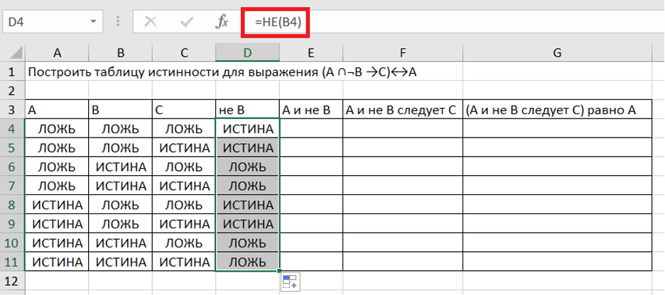
Вычислим данные столбца «А и не В». Для этого в ячейке Е4 напишем формулу: =И(A4;D4), нажмем Enter , и протянем формулу за правый нижний угол. В результате получим:
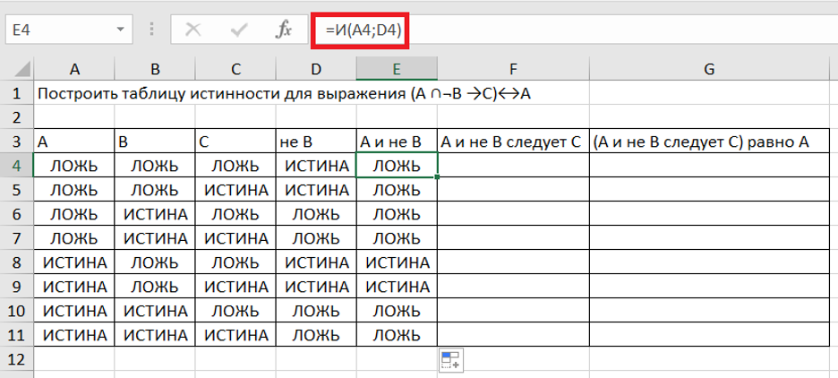
Вычислим данные столбца «А и не В следует С». Для этого в ячейке Е4 напишем формулу: =ИЛИ(НЕ(E4);C4), нажмем Enter , и протянем формулу за правый нижний угол. В результате получим:
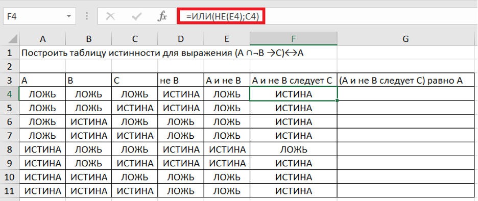
Вычислим данные столбца «(А и не В следует С) равно А». Для этого в ячейке Е4 напишем формулу: =ЕСЛИ(F4=A4;1;0), нажмем Enter , и протянем формулу за правый нижний угол. В результате получим:
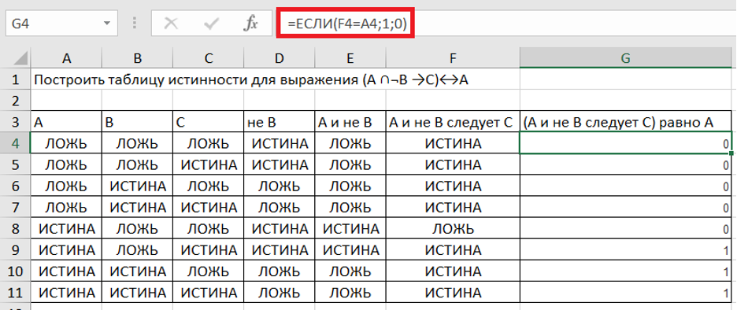
Оформим таблицу:
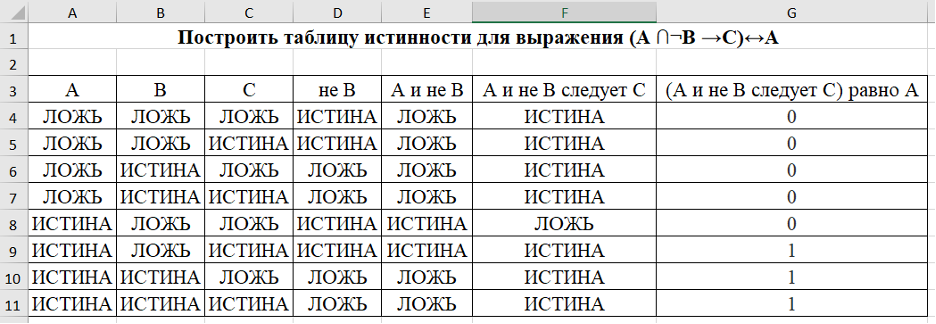
Вопросы и задания для самоконтроля